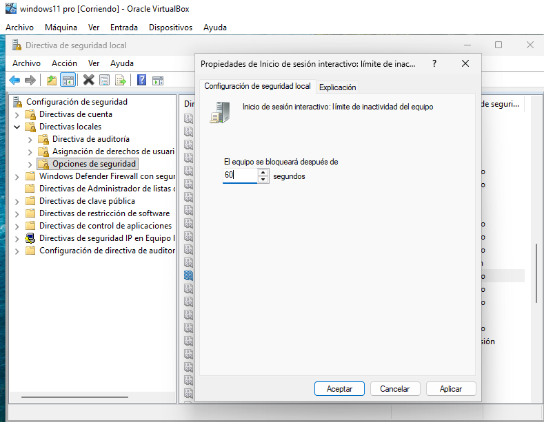
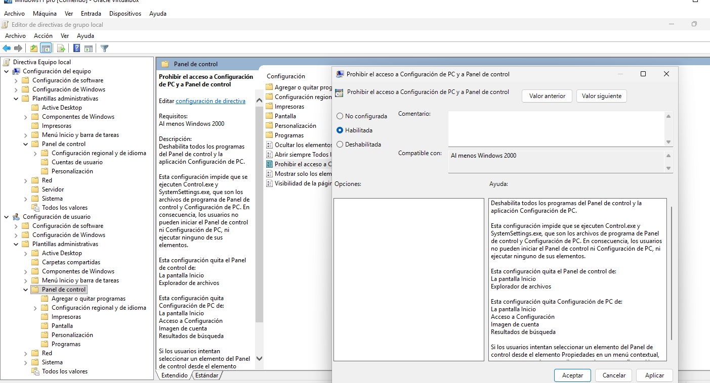
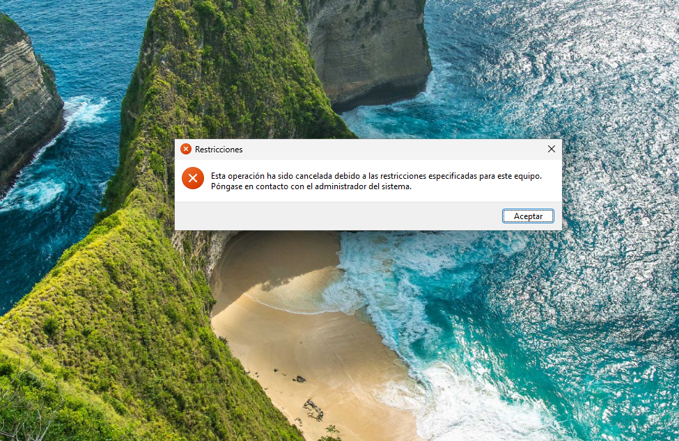
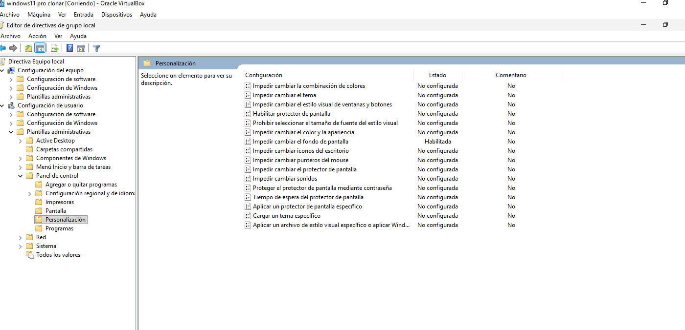
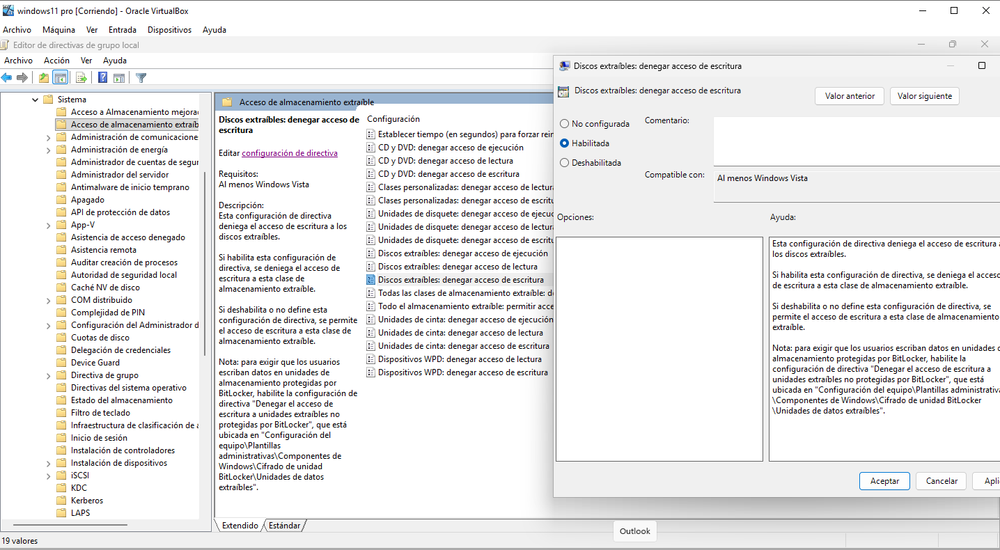
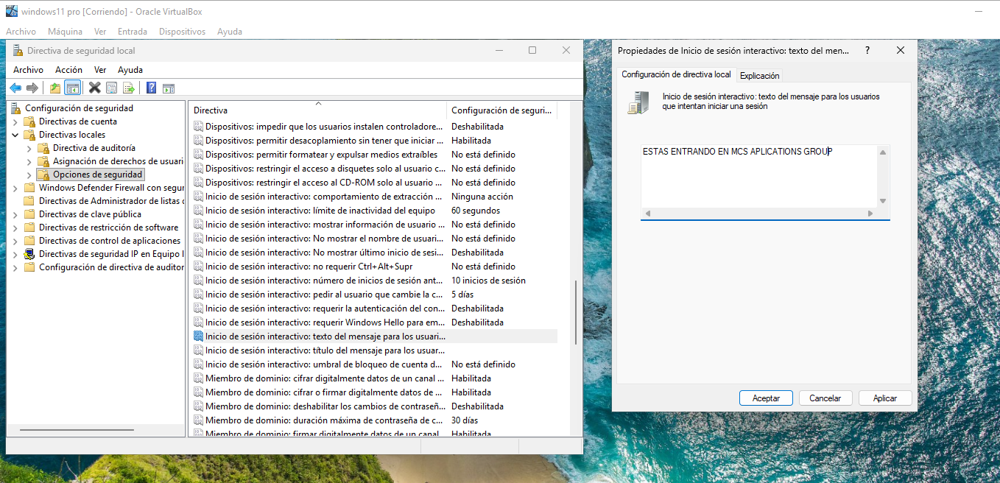
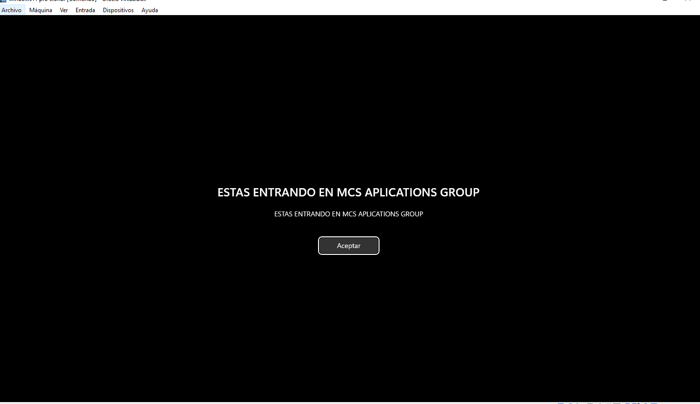
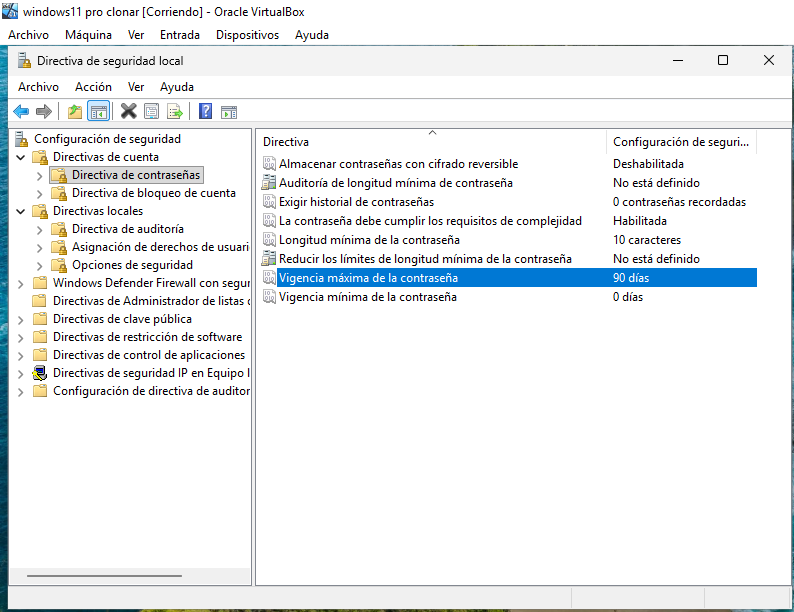
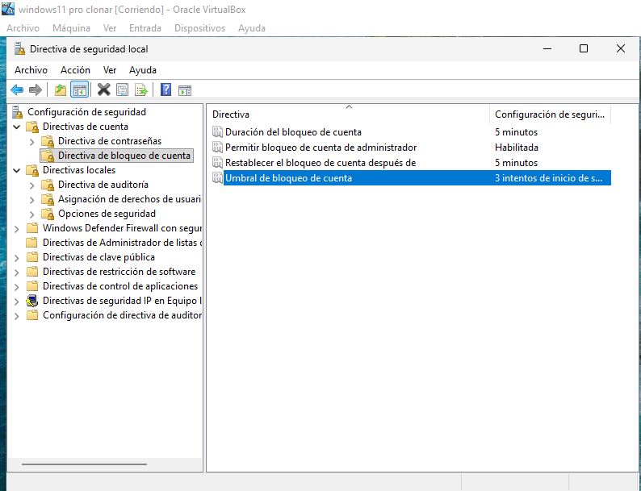
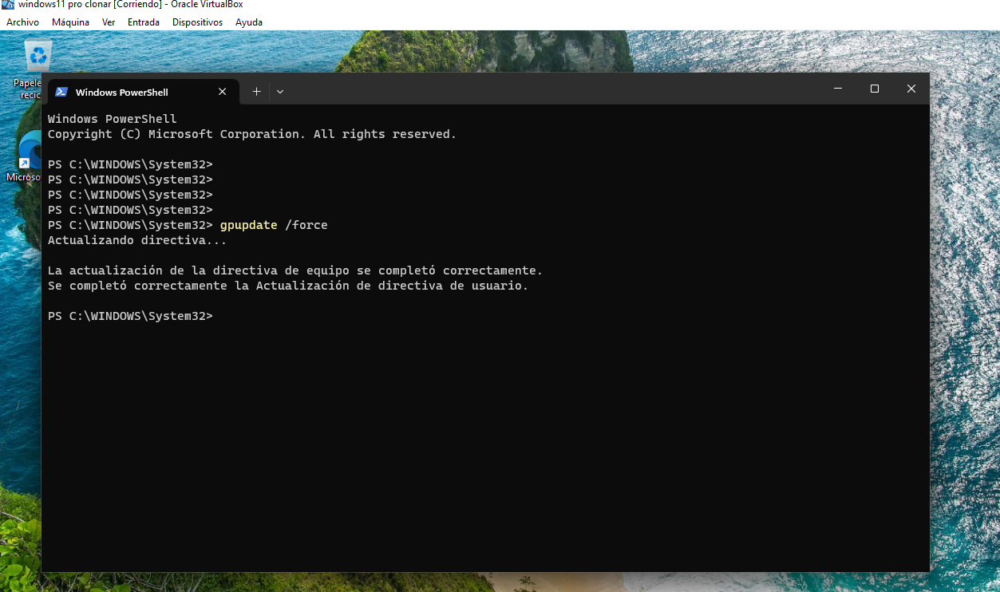

gpedit.msc vs secpol.msc
Las dos consolas administran políticas locales, pero no tienen exactamente el mismo alcance.
gpedit.msc
Editor de directivas de grupo local. Permite configurar directivas de equipo y de usuario, incluidas las Plantillas administrativas.
secpol.msc
Directiva de seguridad local. Está centrada en opciones de seguridad, contraseñas, bloqueo de cuenta y otras políticas de seguridad.
Bloqueo automático por inactividad
Se utilizó un minuto como valor de laboratorio para facilitar la comprobación. El enunciado exige el bloqueo automático, pero no fija un tiempo concreto.

Bloquear el acceso al Panel de control
La restricción se encuentra en Configuración de usuario. Tras aplicar la política, el acceso al Panel de control queda restringido.


Impedir cambiar el fondo de escritorio
La política evita que el usuario modifique el fondo del escritorio. La evidencia muestra la directiva habilitada en el Editor de directivas de grupo local.

Almacenamiento USB en solo lectura
Se deniega la escritura en discos extraíbles. Esto no equivale a denegar todo acceso: la finalidad es permitir la lectura e impedir que el usuario escriba datos en el dispositivo.

Mensaje corporativo


Política de contraseñas

Protección ante intentos incorrectos
El enunciado fija los dos valores de 5 minutos, pero no indica cuántos intentos incorrectos deben provocar el bloqueo. Para el laboratorio se eligió de forma explícita un umbral de 3 intentos.

Forzar actualización de las políticas
Una vez configuradas las directivas, se fuerza su actualización desde una consola con privilegios administrativos.

Resumen final
| POLÍTICA | HERRAMIENTA | ÁMBITO | ESTADO |
|---|---|---|---|
| Bloqueo automático | secpol.msc | Equipo / seguridad | APLICADA |
| Bloquear Panel de control | gpedit.msc | Usuario | VERIFICADA |
| Impedir cambiar fondo | gpedit.msc | Usuario | APLICADA |
| USB solo lectura | gpedit.msc | Equipo | APLICADA |
| Mensaje de inicio | secpol.msc | Seguridad | VERIFICADA |
| Contraseña 10 / complejidad / 90 días | secpol.msc | Cuenta | APLICADA |
| Bloqueo 3 intentos / 5 min / reset 5 min | secpol.msc | Cuenta | APLICADA |
| Actualización de políticas | gpupdate | Equipo + usuario | COMPLETADA |
Lo que hay que recordar
gpedit.msc
= Editor de directivas de grupo local.
2.
secpol.msc
= Directiva de seguridad local.
3. Las restricciones de Panel de control y fondo usadas aquí están en Configuración de usuario.
4. La restricción USB está en Configuración del equipo.
5. Contraseñas y bloqueo de cuenta están en Directivas de cuenta.
6.
gpupdate /force
fuerza la actualización
de las directivas.
7. Habilitar una directiva no siempre implica efecto visual inmediato: algunas requieren cerrar sesión o reiniciar.
gpedit.msc ............... OK
secpol.msc ............... OK
gpupdate /force .......... OK
SYS-ACT-006 .............. COMPLETED